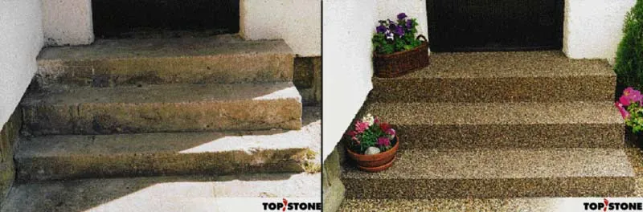
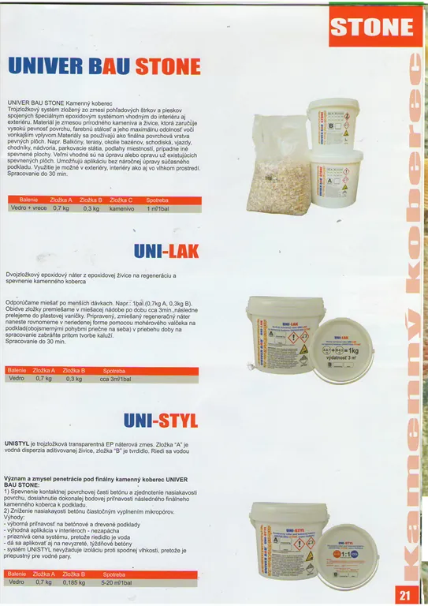
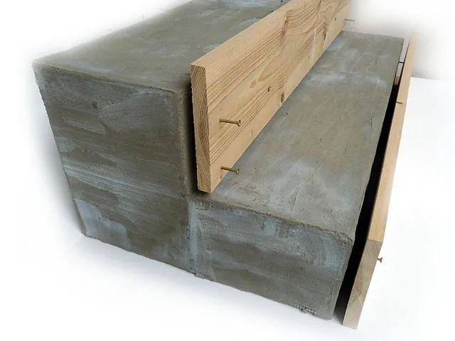

Kamenný koberec BIANKA.
CENY: Prírodný kameň od 22.80 Eur/m2
Drvený mramor od 31,- Eur/m2 s Dph
Povrchová úprava 
Alternatíva pre všetky betonové povrchy - starši aj nové!
Povrchy Topstone sú zmesou prírodného kameniva a špeciálnej živice. Táto kombinácia zaručuje vysokú pevnosť
povrchu a jeho maximálnu odolnosť voči vonkajšom vplyvom.

Povrchy BIANKA sa hodia k úpravám:• schodísk
• balkónov
• výjazdov
• vstupov
• dvorov
• chodníkov
• podláh altánov a pergol
Tieto povrchy sú veľmi žiadané na úpravu okolia bazénov
na terasy a k celkovým úpravám okolia domov!
Prečo zvoliť povrchy BIANKA?
získate tak celistvý, exkluzívne vyzerajúci povrch bez špár,
povrch, ktorý je:
• mrazuvzdorný
• vodopriepustný (netvoria sa kaluže, čo uvítame najme na príjazdových cestách, chodníkoch a u bazénov)
• nešmýka, v zimnom období má výborné protišmykové vlastnosti
• je nenáročný na údržbu v lete aj v zime
Ďalšou veľkou prednosťou povrchu stone, ktorú ocenia najme majitelia staršch nevzhľadných betónových plôch je, že ich môžete renovovať bez toho, aby ste museli starý betón akokoľvek upravovať.
Povrchy stone Vám ponúkame v niekoľkych prevedeniach, ktoré sa líšia hrúbkou základného kameniva a farbou.
Všetky varianty ponúkame a dodávame v sadách balených po 1m2 s prýslušným množstvom živice a podrobným návodom na postup alebo Vám radi prídeme položiť povrchy priamo na miesto. Tu by sme radi uviedli, že vytvorenie povrchu je veľmi jednoduché.
FARBY KAMIENKOV A VEĽKOSŤ KAMIENKOV


technické info

STONE POVRCHY
Materiál STONE sa používa na staré a nové betónové plochy. Jednou z množstiev výhod tohto materiálu je, že ho môžete použiť (pokladať) aj na vydrobený betón, ale taktiež na zámkovú dlažbu, dlaždice a teraso. Najčastejšie sa používa na úpravu okolia bazénov, terás, chodníkov, chodníčkov okolo domu, altány, vjazdy do garáži, príjazdové cesty a schody.
Pokiaľ sa pokladá na staršiu dlažbu, nemala by byť dutá, pretože hrozí následné odlúpnutie dlažby aj s povrchom STONE. Pokiaľ sa pokladá na betón, ktorý nie je rovný, možno ho bez problémov dorovnať našim materiálom, avšak je potrebné rátať s väčším množstvom materiálu použitého na 1 m2. Navýšenie materiálu je rôzne podľa stavu vydrveného betónu. Najprv musíme zaliať diery do roviny a až potom nanášať doporučenú vrstvu (cca 1,4 cm). Pokiaľ materiál sypete do debnenia, počítajte vždy s navýšením spotreby o 15-20%. Materiál dobre drží taktiež na kove a drevu. Nedrží ale na plastoch, pretože sú mastné a materiál sa z nich odlúpne! Materiál je vodopriepustný, preto ho nemožno použiť ako hydroizolaciu. Pokiaľ potrebujeme vytvoriť pod materiál STONE hydroizolačnú vrstvu, je nutné použiť dvojzložkovú hydroizolaciu na báze cementu. Môžeme taktiež použiť lepenku prestierkovanú tenkou vrstvou lepidla a tým opäť vytvoriť savý podklad, ku ktorému už STONE priľne.
SPÁJACIA ZMES
sa skladá s živice a tužidla. Zmiešaním týchto dvoch zložiek získame mazľavú tekutinu, ktorú je dôležité VEĽMI DÔKLADNE PREMIEŠAŤ s vybraným druhom kameniva!!!
Zmes sa rozťahuje oceľovým murárskym hobľom. Pokiaľ povrch STONE kladieme na betón, musí byť (betón) dobre zametený a vyčistený najlepšie prúdom vody a potom zapenetrovaný. Ak je betón vydrvený, nie je vhodné diery vypĺňať novým betónom, v zime by totiž hrozilo odmŕzanie betónu a následne odlupovanie povrchu STONE. Vydrvený betón odporúčame vyplniť flexibilným tmelom alebo lepidlom. Materiál STONE sa môže klásť v akejkoľvek vrstve. Odporúčame vo výške min. 1cm, bežne kladieme vo výške 1,5 cm. Tomuto odpovedá aj uvedená priemerná spotreba materiálu (25kg kameniva + zodpovedajúce množstvo spájacej zmesi na 1 m2.

UKONČENIE A OKRAJE POKLÁDNÝCH PLÔCH
Obvykle sa plocha ukončí do stratena, napr. pokiaľ prechádza do trávy...
Pri našliapnutí potom hrana nie je ostrá.
Pokiaľ je nutné, aby bola hrana ostrá, je možné ju ukončiť dvoma spôsobmi:
1) K betónu sa zboku priloží doska a materiál sa dotiahne k doske. Hneď ako uschne materiál, dosku odstránime a hrana ostane ostrá.
2) Ukončenie lištou tvaru L. To znamená, že k okraju betónu prilepíme hliníkovú lištu vo tvare L a materiál dotiahneme k lište. Tento spôsob vypadá esteticky a je veľmi pekný. Lišty aj lepidla dodáme taktiež.
Pokiaľ kladieme na väčšiu plochu vo viacerých etapách, ukončíme materiál ostrou hranou (napr. ho dotiahneme k hrane dosky). Ďalší deň dosku odoberieme a pokračujeme v kladení.
Ak by zákazník najprv robil nový betón, je potrebné, aby bol (betón) vystužený, aby nepraskal. Sila betónu by mala byť 15-20 cm. Ďalej by mal byť betón vyspádovaný (od bazénu alebo domu) tak, aby sa na ňom nedržala voda. Odporúčame spádovanie: 1 cm na 1 m.
Na nový betón odporúčame klásť materiál až cca 20 dňoch po jeho vyhotovení. K ďalším prednostiam patrí, že je povrch STONE vodopriepustný! Tzn., že voda pretečie cez materiál na betón, na ktorom je položený a po betóne odtečie spádovaným smerom. V zime, pokiaľ voda zamrzne, materiál neodmŕza a netrhá sa, pretože je pórovitý a ľad sa má kde rozpínať. Toto je ďalšia veľká prednosť povrchu STONE, v porovnaní s inými povrchmi (dlažba, dlaždice,...). Ak je v betóne dilatácia, je vhodné použiť dilatačné lišty taktiež na povrchu STONE, a to tak, že ich vložíme nad dilatáciu v betóne (aby boli obidve nad sebou). Dilatácia bráni praskaniu povrchu STONE. Materiál STONE sa kladie na suchý podklad! Najnižšia odporúčaná teplota na kladenie je 10°C. Povrch zaschne za 4-5 hodín. Pracovať s ním je možné približne 30 minút, potom tuhne. Odporúčame, aby jedna osoba pripravovala (miešala) materiál a druhá osoba ho kládla.
Obecne platí: čím vyššia teplota vzduchu, tým rýchlejšie povrch tuhne a zaschýna. Pochôdzny je za 24 hodín, k úplnému vytvrdnutiu dochádza za 2 dni. Zastrešenie (napr. bazénu) možno montovať najskôr za 2 dni. Materiál možno použiť aj na zvislé plochy, ale len za predpokladov, že sa zvislá stena zadební. Medzi stenou a debniacou doskou sa nechá priestor 1,5-2 cm a materiál sa opatrne sype medzi dosku debnenia a stenu.
POZOR!
Debnenie musí byť natreté mazivom(masťou,olejom,...), aby sa materiál k debneniu neprilepil. Cca za 24 hodín možno debnenie odstrániť. Je vhodné sa najprv presvedčiť, azda je materiál zatvrdnutý. Najvhodnejší typ povrchu STONE UBS1, UBS2 pretože je kamenivo drobnejšie. Pri naťahovaní povrchu STONE nesmie pršať, pri miernej prehánke je možné materiál krátkodobo prikryť igelitovou plachtou.
POVRCHY STONE znesú zaťaženie osobnými aj nákladnými automobilmi.
ÚDRŽBA
Údržba materiálu je taká istá ako u iných dlažieb. Najlepšie prúdom vody (wapkou alebo hadicou). V zimnom období sneh odhŕňame radlicou alebo lopatou.
ŽIVOTNOSŤ
Zatiaľ najdlhšie položený povrch STONE je v Beskydách a je tu už desiatym rokom. Stále má pôvodný vzhľad a ja takmer bez zmien. Len odporúčame približne po ôsmych rokoch pretrieť povrch STONE regeneračným náterom. Nie je to však podmienkou! Len sa tým vzhľad povrchu viditeľne oživí.

Návod na použitie
PENETRÁCIA
Podkladový beton neni nutné penetrovať.V sučasnej dobe používame živicu, která je samopenetračná, tzn. že pri pokládke materiálu dochádza súčasne i k penetrácii betonu.
MIEŠANIE MATERIÁLU
Kamenivo nasypeme z vreca do plastovej nádoby (najlepšie 24 l plastové stavebné vedro). Dalej si pripravíme živicu a zmiešame ju s tvrdidlom. Pomery oboch zloziek sú vždy uvedene na ich obalech. Tuto zmes je treba dobre premiešať. Potom ju nalejeme do vedra s kamenivom a vrtačkou s kovovým míešadlom dôkladne zamiešame,.
!Miešaniu živice a kameniva venujte veľkú pozornosť, aby materiál bol veľmi dobre premiešaný!


APLIKACIA
Takto pripravenu zmes rovnomerne roztiahneme na vopred vyčistenu napenetrovanu betonovu plochu vo vrstve cca 1,5cm. K tomuto účelu môžeme použiať hoblovanu drevenu laťu, kde si pomocou klinca vyznačíme potrebnu výšku vrstvy. Dalej potom ocelovým hladítkom udusáme a uhladíme do konečnéj podoby.
Pokiaľ niekde vznikne diera a povrch nieje súvislý, dosypeme zmes a znova uhladíme. Tímto zpôsobom aplikujeme na celu plochu. POZOR - pri práci je potrebné náradie neustále čistiť riedidlom (napr. S6005), aby sa materiál nelepil a povrch zostal hladký. Viac pozornosti je treba venovať zvislým plochám ako sú schody či obrubníky. K tomuto účelu si musíme pripraviť debnenie.
Bednenie zhotovíme tak, že do narezaných dosiek na potrebnú výšku našrobujeme z vonkajšéj strany rovnomerne niekoľko skrutiek, ktorými nastavíme poteebnú rozteč tak cca 1,5 cm medzi bednením a zvislou betónovou plochou. Dosky obalíme igelitom alebo stretč fóliou(potravinárska fólia), čím zamedzíme prilepenie kameniva k bedneníu.
Takto pripravené bednenie pripevníme nejlepšie dvoma hmoždinkami a skrutkami k betonovéj ploche. Do pripraveného bednenia opatrne sypeme materiál za stáleho poklepávania a pichaním akýmkoľvek tenším pichadlom (pásovina, tenká drevená lata). Po vrstvách zaplníme celú plochu.
Podobne postupujeme i u betonových schodišťových stupňou.
Nejdrv zabedníme bok schodišťa, tiež doskami s vytyčovacimi skrutkami.
Potom zabedníme čela schodišťových stupňov a to tak, ab vrch bednenia bol vyššie než nášlap. Do spodnej hrany bednenia si naskrutkujeme skrutky, ktorými upravíme výšku asi 1,5cm od nášlapu. Pri aplikácii postupujeme tak, že sypeme materiál nejprv do schodišťových čiel, potom vyplníme materiálom i nášlap.


Bednenenie odstraňujeme minimálne za 24 hodin od aplikácie, a to tak, že nejprv vyšrrobujeme všetky skrutky a jemným odklepnutím odstránime bednenie. Nejnižšia doporučená teplota pri práci je 10C.
REALIZÁCIE